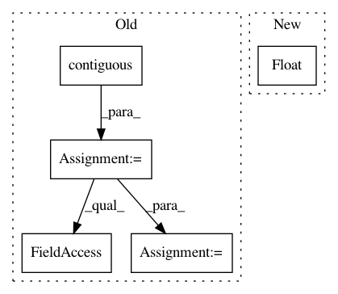

4326582bb1e68480ef79a02abbf4bfacc3aadede,layers/losses.py,MSELossMasked,forward,#MSELossMasked#Any#Any#Any#,39
Before Change
loss: An average loss value masked by the length.
input = input.contiguous()
target = target.contiguous()
// logits_flat: (batch * max_len, dim)
input = input.view(-1, input.shape[-1])
// target_flat: (batch * max_len, dim)
target_flat = target.view(-1, target.shape[-1])
// losses_flat: (batch * max_len, dim)
losses_flat = functional.mse_loss(
input, target_flat, size_average=False, reduce=False)
// losses: (batch, max_len, dim)
losses = losses_flat.view(*target.size())
// mask: (batch, max_len, 1)
After Change
loss: An average loss value masked by the length.
// mask: (batch, max_len, 1)
mask = sequence_mask(
sequence_length=length, max_len=target.size(1)).unsqueeze(2).float()
mask = mask.expand_as(input)
loss = functional.mse_loss(
input * mask, target * mask, reduction="sum")
loss = loss / mask.sum()
In pattern: SUPERPATTERN
Frequency: 3
Non-data size: 5
Instances
Project Name: mozilla/TTS
Commit Name: 4326582bb1e68480ef79a02abbf4bfacc3aadede
Time: 2019-03-06
Author: egolge@mozilla.com
File Name: layers/losses.py
Class Name: MSELossMasked
Method Name: forward
Project Name: cornellius-gp/gpytorch
Commit Name: 784d00f0c38fb5fd77aed0a6dffb93cc98a0c990
Time: 2019-01-29
Author: gpleiss@gmail.com
File Name: gpytorch/likelihoods/gaussian_likelihood.py
Class Name: GaussianLikelihood
Method Name: pyro_sample_y
Project Name: mozilla/TTS
Commit Name: a15b3ec9a18377bf67356a9b5c29f4b767001d05
Time: 2018-08-13
Author: erengolge@gmail.com
File Name: layers/losses.py
Class Name: L1LossMasked
Method Name: forward